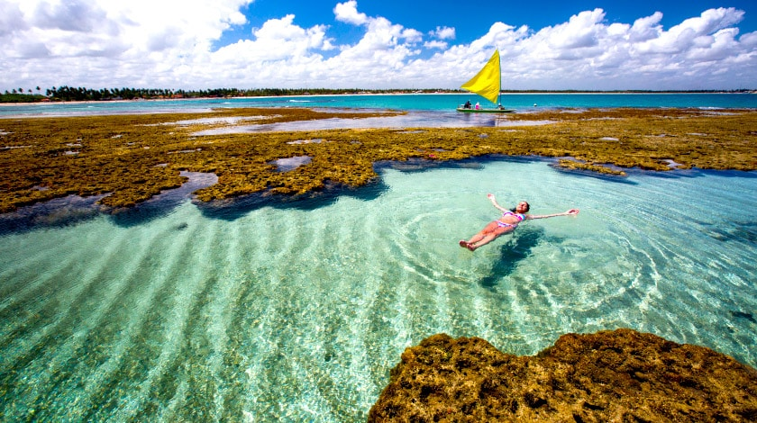

Porto de Galinhas, is a district located in the city of Ipojuca, in Pernambuco, about 60 km from Recife. A
vila is one of the best beach destinations not only in the Northeast, but in Brazil. I don't need to say much to
explain the place: its beaches, characterized by green waters and between natural pools, catch the eye
and draw praise from the most unbelievers. The district has the facility of being close to the International Airport
from Recife, a fact that makes getting to Porto de Galinhas much easier. Its warm and pleasant waters throughout the year
invite for a dip and have the potential to conquer people of all ages.

Porto de Galinhas, is one of the hits in the region and the starting point for the rafts, which take you to the pools
where the little fish are. In the pools, the beauty of nature speaks loudly and makes you understand why Porto is
all this success. At Praia de Muro Alto, another important place to include in the itinerary is the calm that
impresses. The beach looks like a lagoon and anyone who dives into its waters is at serious risk of not wanting to return to
House. Porto has different beaches, with different elements, but a unique beauty.

The success of the village began because of its natural pools, which are located in the central area of the village, with access
through a raft ride that you shouldn't miss. The place is really beautiful, full of fish and
with crystal clear water. And the best beach in Porto de Galinhas, Praia de Muro Alto, cannot be left out of the
your script. During low tide, this beach is calm, like a lagoon... it's delicious!

the best time to go to Porto de Galinhas is from September to March. That's because, it's in these months when it rains less
and that the sun shines practically every day. To avoid overcrowding on the sand, higher prices with accommodation
and queues at restaurants, avoid traveling to Porto de Galinhas during holidays.